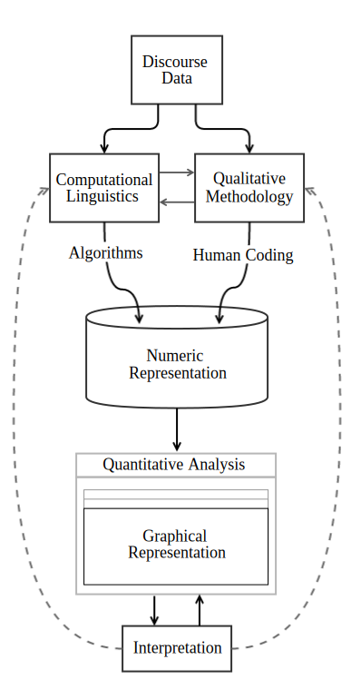
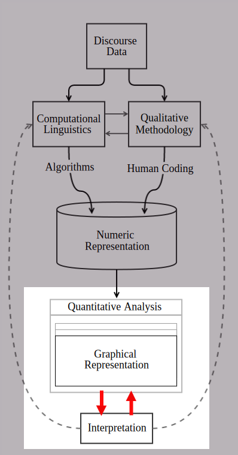
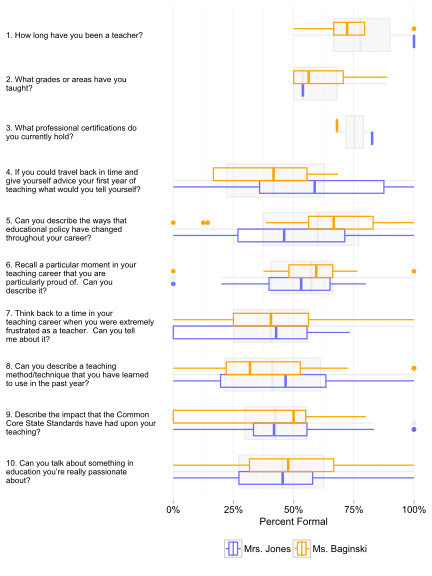
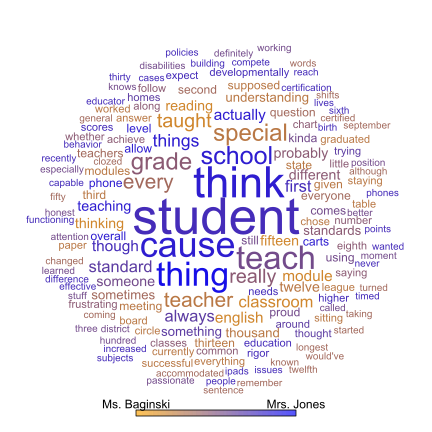

Graphical Discourse Analysis
The purpose of this theoretical dissertation is to investigate the ways that data visualization techniques can extend current qualitative and quantitative methods of discourse analysis.
Research Purpose
To understand how emotional state affects linguistic structures
To understand how vocabulary choices of participants vary across environments and contexts

Site (2013-2014)
- Lincoln Middle School (LMS)
- North-eastern US
- First ring suburb
- 321 enrolled grades 6-8
- 57% economically disadvantaged
Sampling
Purposeful
- Small class size
- Older
- English speaking
Participants
Sources
- Classroom Observation (ELA & Math)
- Audio + Video
- Field Notes
- Transcripts
- Teacher Interview
- Audio
- Transcripts
Observations
Computational Coding
- Regex
- phrases
- tokens
- characters
- syllables
- etc.
- Classifiers (e.g., naive Bayes)
- Taggers & Parsers (e.g., part of speech)
Jurafsky & Manning (2015); Bird, Klein, & Loper (2009); Manning, Surdeanu, Bauer, Finkel, Bethard, & McClosky (2014).
Qualitative Coding
- Grounded Theory
- Glaser & Strauss
- Corbin & Strauss
- General Qualitative
- Miles, Huberman, & Saldaña
- Cresswell
Glaser & Strauss (1965, 1967); Corbin & Strauss (2015); Strauss & Corbin (1990, 1994)
Miles, Huberman, & Saldaña (2014); Miles & Huberman (1984, 1994); Creswell (20017, 2012, 2013, 2014)
| Person | Sentence | this | is | and | simplify |
|---|---|---|---|---|---|
| Greg | 868 | 0 | 0 | 0 | 1 |
| Sean | 4014 | 4 | 3 | 1 | 0 |
| Frank | 5542 | 2 | 0 | 0 | 0 |
| Anisa | 5715 | 0 | 1 | 3 | 0 |
discourse
↓
transcription
↓
codes
↓
vector counts
↓
table
Table Restructuring
- Combining
- Row/Column Binds
- Joins
- Reshaping
- Manipulation
- Mutation
- Summarization
- Complex

Theoretical Framework
- Visual Perceptual Theory (Few, 2012, 2009; Ware, 2013, 2008)
- Layered Grammar of Graphics (Wickham 2010, 2009; Wilkinson, 2005)
- Design Principles (Gibson, 1986, 1977, 1971; Tufte, 2006, 2001, 1997, 1990)

Common Text Visualizations
Static
- Clustering & Outliers
- Speech/Term Distribution Over Time
- Univariate Distribution
- Bivariate Distribution
- Change Over Time
- Frequencies/Counts
- Connection/Flow
- Ensemble
Dynamic
- Animation
- Interactive
Adapted from Few (2009, p. 138)
Clustering & Outliers
Term Use Across Time
Language Participation Across Time
Univariate Distribution

Bivariate Distribution
Change Over Time
Frequencies/Counts
Frequencies/Counts

Connection/Flow

Connection/Flow
Connection/Flow
Ensembles
Graphical Discourse Analysis

Anscombe, F. J. (1973). Graphs in statistical analysis. The American Statistician, 27(1), 17–21. doi:10.2307/2682899
Chang, R., Ebert, D. S., & Keim, D. (2014, April). Introduction to the special issue on interactive computational visual analytics. ACM Transactions on Interactive Intelligent Systems, 4(1), 3:1–3:3. doi:10.1145/2594648
Chiu, M. M. (2008). Flowing toward correct contributions during group problem solving: A statistical discourse analysis. Journal of the Learning Sciences, 17(3), 415–463. doi:10.1080/10508400802224830
Chiu, M. M. (2015). Statistical discourse analysis. In C. A. Resnick & S. Clarke (Eds.), Socializing intelligence through academic talk and dialogue. Washington, DC: American Educational Research Association.
Chiu, M. M. & Chen, G. (2013). Statistical discourse analysis: Testing hypotheses with large datasets of electronic discourse. In H. L. Lim & F. Sudweeks (Eds.), Innovative methods and technologies for electronic discourse analysis (pp. 285–303). Hershey, PA: Routledge.
Card, S. K., Mackinlay, J. D., & Shneiderman, B. (Eds.). (1999). Readings in information visualization: Using vision to think. San Francisco, CA: Morgan Kaufmann.
Chiu, M. M., Molenaar, I., Chen, G., Wise, A. F., & Fujita, N. (2014). Micro-analysis of collaborative processes that facilitate productive online discussions: Statistical discourse analyses of three studies. In E. Barbera & P. Reimann (Ed.), Assessment and evaluation of time factors in online teaching and learning. Hershey, PA: Information Science Reference.
DataScience.LA. (2014, October 13). Hadley Wickham’s "dplyr" tutorial at useR 2014 (1/2) [Video file]. Retrieved from https://www.youtube.com/watch?v=8SGif63VW6E
Few, S. (2009a). Now you see it: Simple visualization techniques for quantitative analysis (1st ed.). Oakland: Analytics Press.
Few, S. (2012b). Show me the numbers: Designing tables and graphs to enlighten (2nd ed.). Burlingame: Analytics Press.
Flowerdew, L. (2012). Corpus-based discourse analysis. In J. P. Gee & M. Handford (Eds.), The Routledge handbook of discourse analysis. London: Routledge.
Gee, J. P. (1999). An introduction to discourse analysis: Theory and method (4th ed.). New York: Routledge.
Gibson, J. J. (1971). A preliminary description and classification of affordances. In E. Reed & R. Jones (Eds.), Reasons for realism. Hillsdale, NJ: Lawrence Erlbaum Associates.
Gibson, J. J. (1977). The theory of affordances. In R. Shaw & J. Bransford (Eds.), Perceiving, acting, and knowing: Toward an ecological psychology (pp. 67–82). Hillsdale, NJ: Lawrence Erlbaum Associates.
Gibson, J. J. (1986). The ecological approach to visual perception. Boston: Houghton Mifflin.
Lim, H. L. & Sudweeks, F. (Eds.). (2013). Innovative methods and technologies for electronic discourse analysis. Advances in Human and Social Aspects of Technology. Hershey, PA: IGI Global.
Mack, A. & Rock, I. (2000). Inattentional blindness. Cambridge, MA: The MIT Press.
Miller, G. (1956). The magical number seven, plus or minus two: Some limits on our capacity for processing information. Psychological Review, 63(2), 81–97. doi:10.1037/h0043158
Ryan, G. W. & Bernard, H. R. (2003). Techniques to identify themes. Field Methods.
Rymes, B. (2009). Classroom discourse analysis: A tool for critical reflection. Cresskill, NJ: Hampton Press.
Simons, D. J. & Chabris, C. F. (1999). Gorillas in our midst: Sustained inattentional blindness for dynamic events. Perception, 28, 1059–1074.
Smagorinsky, P. (2008). The methods section as conceptual epicenter in constructing social science research reports. Written Communication, 25(3), 389–411. doi:10.1177/0741088308317815
Tufte, E. R. (1990). Envisioning information. Cheshire, CT: Graphics Press.
Tufte, E. R. (1997). Visual explanations: Images and quantities, evidence and narrative. Cheshire, CT: Graphics Press.
Tufte, E. R. (2001). The visual display of quantitative information (2nd ed.). Cheshire, CT: Graphics Press.
Tufte, E. R. (2006). Beautiful evidence (1st ed.). Cheshire, CT: Graphics Press.
Ware, C. (2008). Visual thinking: For design. San Francisco, CA: Morgan Kaufmann.
Ware, C. (2013). Information visualization: Perception for design (3rd ed.). Amsterdam: Morgan Kaufmann.
Wickham, H. (2010). A layered grammar of graphics. Journal of Computational and Graphical Statistics, 19(1), 3–28. doi:10.1198/jcgs.2009.07098
Wilkinson, L. (2005). The grammar of graphics. In Statistics and computing (2nd ed.). Springer.